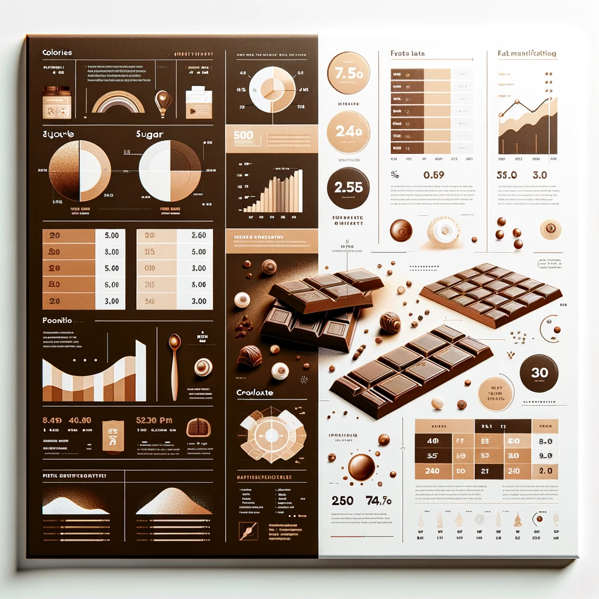

History of Choco Bliss
Choco Bliss, first introduced in 1920, is a delightful fusion of rich chocolate and crunchy almonds. This classic treat has been a favorite for over a century, charming chocolate lovers with its perfect balance of flavors and textures. Crafted using only the finest ingredients, each bar of Choco Bliss promises a luxurious and indulgent experience. The secret behind its enduring popularity lies in the meticulous process of selecting the best cocoa beans and the freshest almonds, combined with a time-honored recipe that has been perfected over generations. Not just a candy bar, Choco Bliss is a symbol of joy and celebration, making it a staple at gatherings and a cherished gift among friends and family. Its legacy continues to grow, transcending time and trends, and remaining a beloved choice for those who appreciate the art of fine chocolate-making.
Nutritional Information

Each bar of Choco Bliss contains 220 calories, 15 grams of sugar, and 7 grams of fat, striking a balance between indulgence and nutrition. This carefully crafted composition ensures that every bite is not only a treat for the taste buds but also provides a reasonable amount of energy for a quick snack. The 7 grams of fat contribute to the chocolate's smooth and creamy texture, while the 15 grams of sugar enhance its sweet, rich flavor, making it an irresistible choice for those looking for a delightful treat. Despite its decadent taste, Choco Bliss is designed to be enjoyed as part of a balanced diet, offering a moment of pleasure without excessive guilt. Its nutritional profile reflects our commitment to quality and enjoyment, ensuring that Choco Bliss remains a favored snack for those who savor the finer things in life, yet are mindful of their dietary choices.